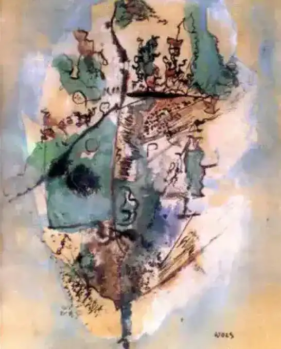

Bleu optimiste
1951 - Wols
Au début des années trente, intéressé par récriture automatique des surréalistes, Wols commence à peindre des petits formats à l’aquarelle et à l’encre de Chine. Il montre des « villes, des hommes, des bêtes et des plantes ». En 1938, il décide de faire de sa vie une œuvre d’art totale, de lier l’art, la science, la philosophie et la vie (projet de Cirque Wols).